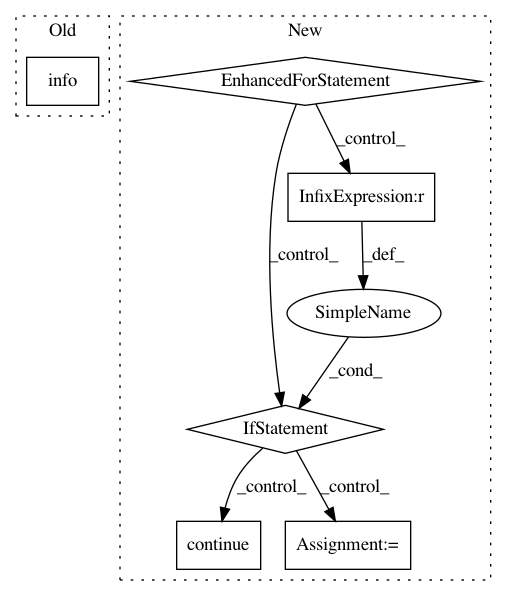

cefe625f707d3fd0241f4ad682d2d991233db200,tmtoolkit/lda_utils/evaluation_sklearn.py,MultiprocEvaluationWorkerSklearn,fit_model_using_params,#MultiprocEvaluationWorkerSklearn#Any#,23
Before Change
else:
results = lda_instance.perplexity(data)
logger.info("> evaluation result with metric "%s": %f" % (self.eval_metric, results))
self.send_results(params, results)
After Change
lda_instance.fit(data)
results = {}
for metric in self.eval_metric:
if metric == "cross_validation": continue
metric_opt = self.eval_metric_options.get(metric, {})
if metric == "cao_juan_2009":
topic_word_distrib = lda_instance.components_ / lda_instance.components_.sum(axis=1)[:, np.newaxis]
res = metric_cao_juan_2009(topic_word_distrib)
elif metric == "arun_2010":
topic_word_distrib = lda_instance.components_ / lda_instance.components_.sum(axis=1)[:, np.newaxis]
res = metric_arun_2010(topic_word_distrib, lda_instance.transform(data), data.sum(axis=1))
else: // default: perplexity
res = lda_instance.perplexity(data)
logger.info("> evaluation result with metric "%s": %f" % (metric, res))
results[metric] = res
self.send_results(params, results)
def evaluate_topic_models(varying_parameters, constant_parameters, data, metric=None, n_workers=None, n_folds=0,
In pattern: SUPERPATTERN
Frequency: 3
Non-data size: 6
Instances
Project Name: WZBSocialScienceCenter/tmtoolkit
Commit Name: cefe625f707d3fd0241f4ad682d2d991233db200
Time: 2017-10-12
Author: markus.konrad@wzb.eu
File Name: tmtoolkit/lda_utils/evaluation_sklearn.py
Class Name: MultiprocEvaluationWorkerSklearn
Method Name: fit_model_using_params
Project Name: WZBSocialScienceCenter/tmtoolkit
Commit Name: cefe625f707d3fd0241f4ad682d2d991233db200
Time: 2017-10-12
Author: markus.konrad@wzb.eu
File Name: tmtoolkit/lda_utils/evaluation_gensim.py
Class Name: MultiprocEvaluationWorkerGensim
Method Name: fit_model_using_params
Project Name: OpenNMT/OpenNMT-tf
Commit Name: ab6f9e4c489beea3bec518d60629c0f8af0b6123
Time: 2019-06-21
Author: guillaume.klein@systrangroup.com
File Name: opennmt/runner.py
Class Name: Runner
Method Name: train